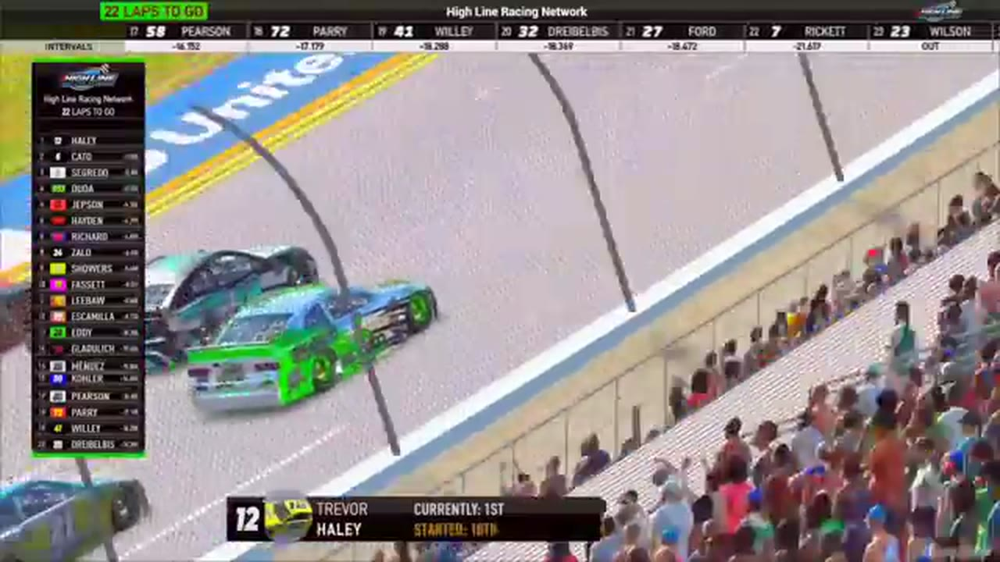

Scott Wise
Team assignment not stated in the structured owner record.
A REVIEWED STORY FILE
- Official files
- 12
- Central editions
- 1
- Exact tape cues
- 12
- Accepted podiums
- 0
Scott Wise appears in 12 official HLRN broadcast files across Seasons 1, 2. The current result ledger does not assign this driver a supported top-three finish. A consistently stated team affiliation remains open for owner review. The currently indexed source window runs from December 1, 2025 through July 20, 2026.
Highline Central supplies 1 bounded race edition, while the primary chapter index supplies 12 direct jump points. Daytona is the most frequent named track in the current appearance ledger. The densest direct-tape categories are incident (7 cues) and restart (2 cues). Those counts describe where the name is easiest to find; they are not fault, pace, or performance grades. A source-attributed car frame is published with its original video and timestamp. That is the current discovery map for Scott Wise.
Official name signals are used for discovery only. They do not become starts, points, incident counts, or an ability grade. This page is deliberately detailed about the tape and restrained about the unavailable competition record. Separately, 8 Highline Live files sit on the bonus shelf and never enter the official season ledger. The displayed name is labeled transcript normalized; that status remains visible so an owner roster can strengthen or correct the identity without rewriting the evidence trail. Those boundaries define Scott Wise's public HLRN file.
10 featured race-tape cues
These are discovery routes into complete HLRN broadcasts, not performance grades or inferred results.
- S1 / R3 · FINISH
Dave Schutt and Craig Rowe enter the final-lap decision
S1 / R3 at 1:47:53: The white flag opens the final-lap decision at Charlotte, with Dave Schutt, Craig Rowe, and Scott Wise named in the decisive group. The cut continues through the immediate finish call on the full primary broadcast.
Charlotte - S2 / R1 · RESTART
Ryan Wilson launches Daytona's four-lap sprint
Ryan Wilson reaches the Pedley start zone and takes the green with four laps scheduled to remain. Another caution quickly follows with Scott Wise and Shane Hatfield involved, but the window begins as a restart—not a Wilson pit stop.
Daytona - S1 / R3 · RESTART
Dave Schutt and Timothy Tyler bring Charlotte back to green
S1 / R3 at 1:41:44: Dave Schutt, Timothy Tyler, Scott Wise, and Cory Cook are in the booth's front-pack call as Charlotte returns to green. The cut keeps the restart launch and the first lap of lane development together.
Charlotte - S1 / R15 · STRATEGY
Fuel-only stops split the iRacing Superspeedway field
S1 / R15 at 1:47:30: Fuel-only calls split the pit cycle, with Alex Galloway and Scott Wise named in the sequence. The clip is a strategy receipt from the primary iRacing Superspeedway broadcast, not a reconstructed scoring sheet.
iRacing Superspeedway - S2 / R2 · INCIDENT
Iowa's opening green immediately ends in an unresolved caution
Trevor Haley launches with Brandon Showers, Matt Brown, and Cory Cook near the front before a distant incident brings out the yellow. HLRN checks Scott Wise and Jim Sagredo but does not establish a visible cause.
Iowa - S2 / R2 · INCIDENT
The No. 18 washes up and turns Scott Wise at Iowa
The live camera checks Brock Piper as the caution appears, then finds Scott Wise spun on the high side. Replay shows the No. 18 washing up into Wise; Piper's on-screen appearance is not treated as participation in the wreck.
Iowa - S2 / R2 · INCIDENT
Daryl Sabalos and Brian Hebert surface in the Iowa caution replay
S2 / R2 at 1:20:25: The caution sequence centers the replay call on Daryl Sabalos, Brian Hebert, and Scott Wise. This is a source-bounded incident window; it preserves what the booth reviews without assigning unsupported fault.
Iowa - S1 / R15 · INCIDENT
Caleb Smith threads through the late superspeedway wreck replay
The booth switches to Caleb Smith's view as he slows through a wreck involving Aldo Nolle, Eric Hayden, Scott Wise, Brian Hayes, and other cars. The replay documents Smith's route through the traffic without assigning blame.
iRacing Superspeedway - S1 / R8 · INCIDENT
Scott Wise and Nick Bowman surface in the Talladega caution replay
S1 / R8 at 1:12:15: The caution sequence centers the replay call on Scott Wise, Nick Bowman, and Shawn Stamper. This is a source-bounded incident window; it preserves what the booth reviews without assigning unsupported fault.
Talladega - S1 / R4 · INCIDENT
Scott Wise is caught in the iRacing Superspeedway caution replay
S1 / R4 at 1:32:47: The caution sequence centers the replay call on Scott Wise. This is a source-bounded incident window; it preserves what the booth reviews without assigning unsupported fault.
iRacing Superspeedway
Recent editions connected to Scott Wise
Verified team history is not consistently stated. No position-specific top-three result is currently accepted. Name normalization remains reviewable against owner records.